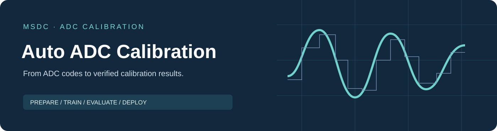

Auto ADC Calibration
Automated neural-network-based digital calibration for ADCs
简体中文 · Installation · Quick start · User guide · 中文

A Windows desktop workbench for ADC data preparation, neural-network calibration, independent evaluation, pruning, quantization and optional hardware assessment. Projects keep models, settings and reports together so that experiments can be reviewed and compared.
Get started
- Obtain the complete Windows package from official Releases and read the notes for that version.
- Follow the installation guide, extract the entire package and launch
KAN Workbench.exe. - Use the synthetic examples to complete preprocessing, floating-point training and model testing.
This repository contains distribution information and documentation. GitHub's Source code (zip / tar.gz) downloads are snapshots of this documentation repository. Download the Windows application asset from Releases.
Workflow
| Stage | Purpose | Main outputs |
|---|---|---|
| Preprocessing | Select captures and configure the ADC and data format | Prepared data and training/test splits |
| Training / model search | Fit a correction model or search candidate configurations | Checkpoints, training curves and acceptance results |
| Model testing | Evaluate a frozen model on original captures | Spectra and per-capture SNDR / SFDR |
| Pruning / quantization | Prepare a smaller model or a quantized model | Acceptance results and model comparisons |
| RTL / ASIC | Export compatible models and assess hardware with external tools | Functional, area, timing and activity-based power reports |
Hardware workflows require the relevant tools or optional extensions. See the hardware guide · 中文 for supported paths and evidence limits.
Documentation
- Installation and quick start.
- Illustrated tutorial · 中文 and reference manual · 中文.
- Data format · 中文, troubleshooting · 中文 and upgrade guide · 中文.
- Version history, software license and third-party notices.
Permitted use
Free use is granted for personal noncommercial purposes and noncommercial academic work. Commercial use and enterprise-sponsored research require separate written authorization, including enterprise-sponsored university projects. Share official download links; redistribution, mirroring or repackaging requires separate authorization.
The authoritative terms are in the Chinese software license; an English translation is provided for convenience. Third-party components retain their own license rights. Application source code is not published. This is proprietary software, not an open-source project.
Interpreting results
Keep final test data separate and report the sampling rate, read range, model and settings. Software evaluation and synthetic examples do not establish measured ADC performance. Functional RTL checks, synthesis estimates, physical implementation results and measured silicon results are distinct forms of evidence.
Attribution
Copyright © 2026 电子科技大学模数混合与SoC芯片设计中心（MSDC）
Author: 陈梓函 · Contact: 644245542@qq.com
For academic work, please record the software version and cite this project. See CITATION.cff.